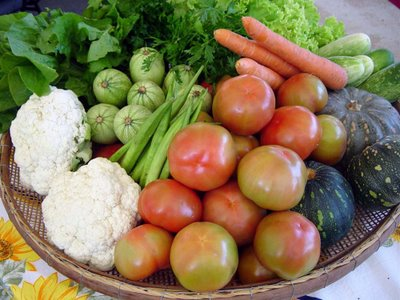
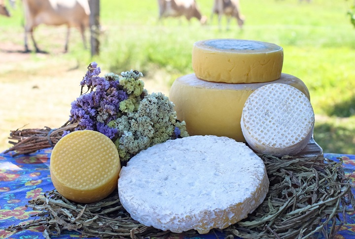
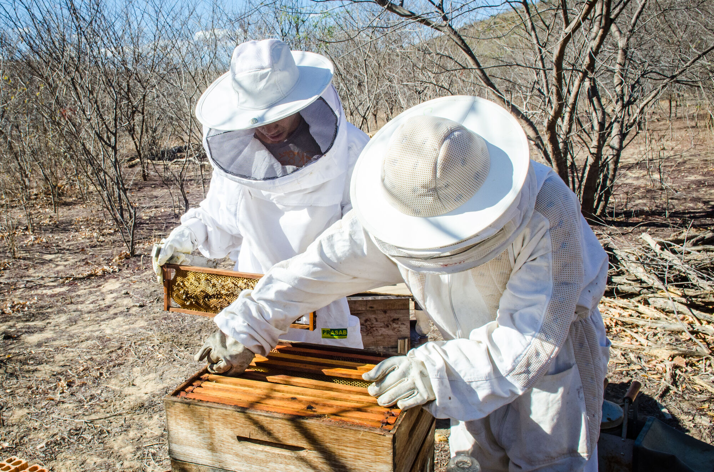
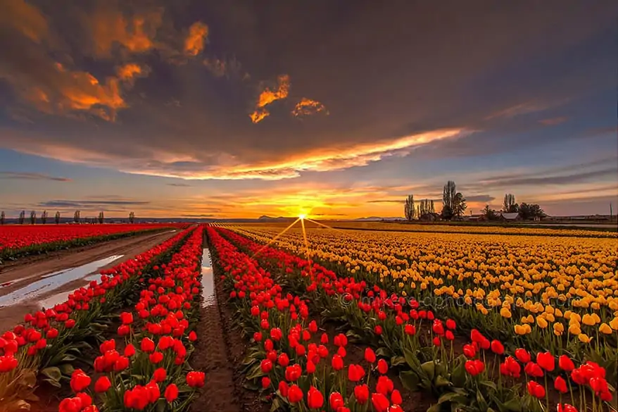
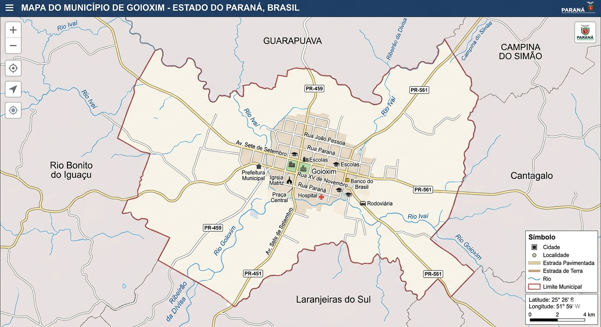

Nossa Missão
O AgroConecta Goioxim nasceu para transformar a realidade dos nossos produtores. Nossa missão é conectar quem produz com quem consome, valorizando o trabalho local e utilizando a tecnologia como ponte para fortalecer a economia de Goioxim.
Acreditamos que a inovação digital pode caminhar lado a lado com as tradições do campo, trazendo mais visibilidade e facilidade para a comercialização de produtos da nossa terra.
Nossos Produtores

Sítio Boa Vista
Produtor: Sr. João

Fazenda Pinhalzinho
Produtora: Dona Maria

Mel de Goioxim
Produtor: Sr. Antônio

Sítio das Flores
Produtora: Ana Paula

Horta da Comunidade
Produtor: Sr. Marcos

Estância do Pinhal
Produtora: Dona Elena

Doces da Reni
Produtora: Reni Silva
Sítio Boa Vista
Fazenda Pinhalzinho

Mel de Goioxim
Mapa da Produção em Goioxim
Conectando o campo e a cidade através da nossa agricultura familiar.

- Colégio Dr. João Ferreira Neves
- Campo
- Produtores AgroConecta
💡 Você Sabia?
🍎 Desafio da Colheita
Encontre as frutas e evite a cobra!
Sobre o AgroConecta Goioxim
O AgroConecta Goioxim é uma iniciativa focada em modernizar a conexão entre produtores locais e consumidores. Através desta vitrine digital, valorizamos a agricultura familiar de Goioxim e do Campo de Pinhalzinho.
Este projeto une tecnologia e impacto social, facilitando o acesso a produtos frescos e fortalecendo nossa economia regional.
Facilidade e Conexão Direta
A plataforma funciona de maneira simplificada: ao explorar a nossa lista de produtores, você tem acesso imediato à origem dos produtos e ao contato direto via WhatsApp. Sem intermediários, o processo incentiva a economia circular e garante que produtos frescos cheguem à sua mesa com apenas um clique.
🙋 Perguntas Frequentes
Como posso cadastrar meus produtos?
Os produtores interessados podem entrar em contato diretamente com a coordenação do projeto no Colégio Dr. João Ferreira Neves ou falar com um dos alunos de Educação Digital.
O AgroConecta faz as entregas?
O site funciona como uma ponte tecnológica. A entrega e o pagamento são combinados diretamente entre você e o produtor através do link de WhatsApp disponível nos cards.
O cadastro é gratuito?
Sim! Este é um projeto educacional sem fins lucrativos, focado em fortalecer a nossa agricultura familiar local.
Sobre a Coordenação
Este projeto foi idealizado e desenvolvido pela Prof.ª Gabriela Moreira de Assis.
O AgroConecta Goioxim é fruto da prática docente nas aulas de Educação Digital, contando com o apoio e engajamento dos estudantes do Colégio Estadual Dr. João Ferreira Neves.